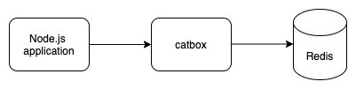

Redis Caching in Hapi
Hapi caching is described in their official documentation. The following guide specifically describes how server-side Redis caching can be added to a Hapi based microservice.
Server-side caching in Hapi
Hapi server-side caching uses the catbox interface to abstract away the underlying caching technology being used (e.g. memory, Redis, Memcached).

There are three main concepts to Hapi server-side caching:
* The cache strategy (or provider): is the underlying caching technology being employed. Here catbox-redis, the Redis adapter for catbox, is the strategy.
* The cache client: is the low-level cache abstraction, and is initialised using a cache stragegy (e.g. memory or Redis). Hapi initialises an in-memory cache client by default, and you can create additional cache clients using the same or different strategies (e.g. you can have one in-memory cache, and one Redis cache).
* The cache policy: is a higher-level cache abstraction that sets a policy on the storage within the cache (e.g. expiry times). The cache policy also provides additional segmentation within the cache client. Typically the cache policy is how you would interact with cache values via the get and set menthods.
Configuring the default cache client
As mentioned above, Hapi initialises an in-memory cache client by default. If you wish you can make the default cache client use a different strategy. For example, the following would make the default cache strategy use Redis or memory depending on the value of config.useRedis:
const catbox = config.useRedis ? require('@hapi/catbox-redis') : require('@hapi/catbox-memory')
const catboxOptions = config.useRedis
? {
host: process.env.REDIS_HOSTNAME,
port: process.env.REDIS_PORT,
password: process.env.REDIS_PASSWORD,
partition: process.env.REDIS_PARTITION,
tls: process.env.NODE_ENV === 'production' ? {} : undefined
}
: {}
const server = hapi.server({
port: config.port,
cache: [{
provider: {
constructor: catbox,
options: catboxOptions
}
}]
}
Configuring new cache clients
Additional cache clients can be created when initialising the Hapi server by adding new definitions to the cache array. Additional caches are required to be given a name. For example, the following will create a new Redis cache client called session.
const catbox = require('@hapi/catbox-redis')
const catboxOptions = {
host: process.env.REDIS_HOSTNAME,
port: process.env.REDIS_PORT,
password: process.env.REDIS_PASSWORD,
partition: process.env.REDIS_PARTITION,
tls: process.env.NODE_ENV === 'production' ? {} : undefined
}
const server = hapi.server({
port: config.port,
cache: [{
name: 'session',
provider: {
constructor: catbox,
options: catboxOptions
}
}]
}
NOTE 1: This example will create two cache clients, the default in-memory cache client and a new cache client called session that uses Redis
NOTE 2: Hapi will always use the default in-memory cache client unless you specify the name when using it (either directly or via the cache policy, see below)
Creating and using a cache policy
Lastly we create the cache policy, which is typically how we interact with the cache (see the catbox policy documentation for more details and how set and get data in the cache).
When creating a cache policy, if you don't explictily provide the name of a cache client (via the cache property), it will use the default cache client.
To create a cache policy using a segement within the default cache client:
myCache = server.cache({
expiresIn: 36000,
segment: 'mySegment'
// ... any other configuration
})
To create a cache policy using a segement within a named cache client (in this case session):
myCache = server.cache({
cache: 'session'
expiresIn: 36000,
segment: 'mySegment'
// ... any other configuration
})
Integration with yar session cookies
Hapi yar is a plugin that adds unauthenticatd session support (state across multiple browser request) to Hapi. By default it tries to fit session data into a session cookie, but will use server-side storage via the Hapi cache interface if the sesion data is greater than the max size specified when registering the plugin.
Combining Hapi yar with Redis caching is one way to allow multiple replicates of a web server microservice to share server-side user session data.
Example configuration using the default cache client:
server.register({
plugin: require('@hapi/yar'),
options: {
cache: {
expiresIn: 36000
},
maxCookieSize: 0 // this will force server-side caching
// ... other config here
}
})
Example configuration using a named cache client:
server.register({
plugin: require('@hapi/yar'),
options: {
cache: {
cache: 'session'
expiresIn: 36000
},
maxCookieSize: 0 // this will force server-side caching
// ... other config here
}
})